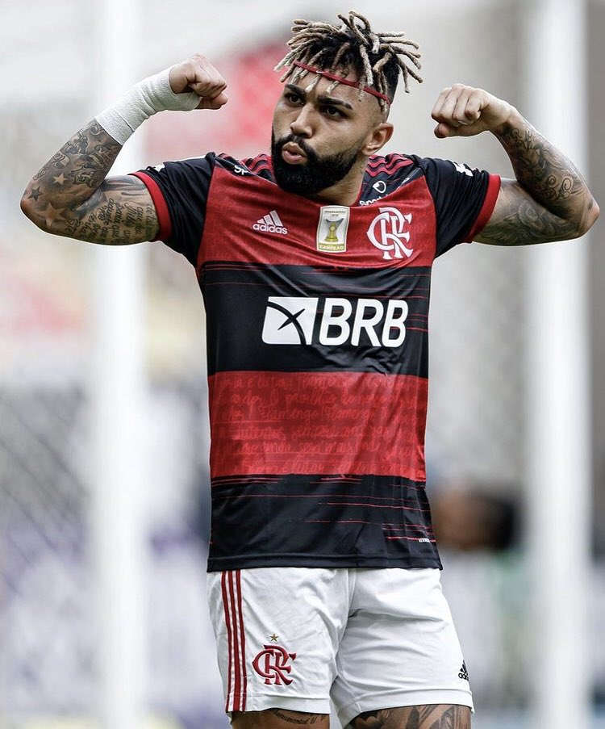

mengão
voltar pro flamengo

- Copa do Brasil - 1990 (invicto), 2006, 2013 e 2022
- Supercopa do Brasil - 2020 e 2021
- Campeonato Carioca - (37 títulos) 1914, 1915 (invicto) 1920 (invicto), 1921, 1925, 1927, 1939, 1942, 1943, 1944, 1953, 1954, 1955, 1963, 1965, 1972, 1974, 1978, 1979, 1979 (especial - invicto), 1981, 1986, 1991, 1996 (invicto), 1999, 2000, 2001, 2004, 2007, 2008, 2009, 2011 (invicto), 2014, 2017 (invicto), 2019, 2020 e 2021.